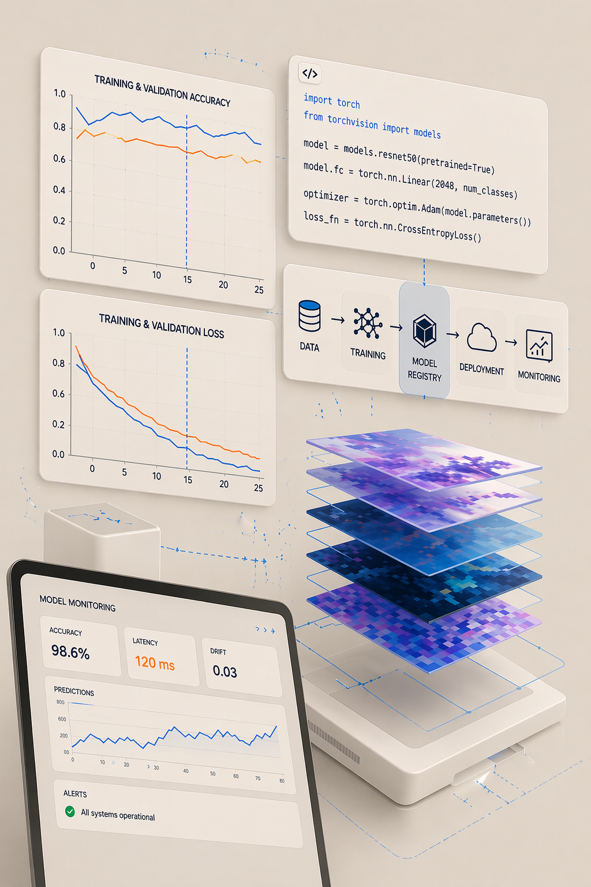
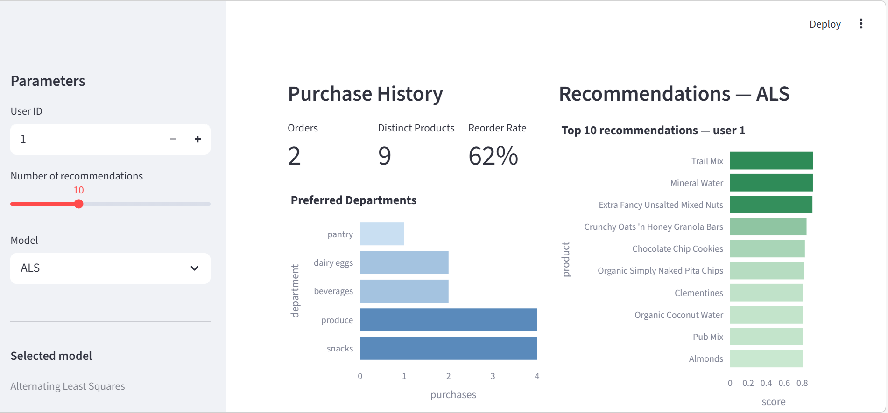
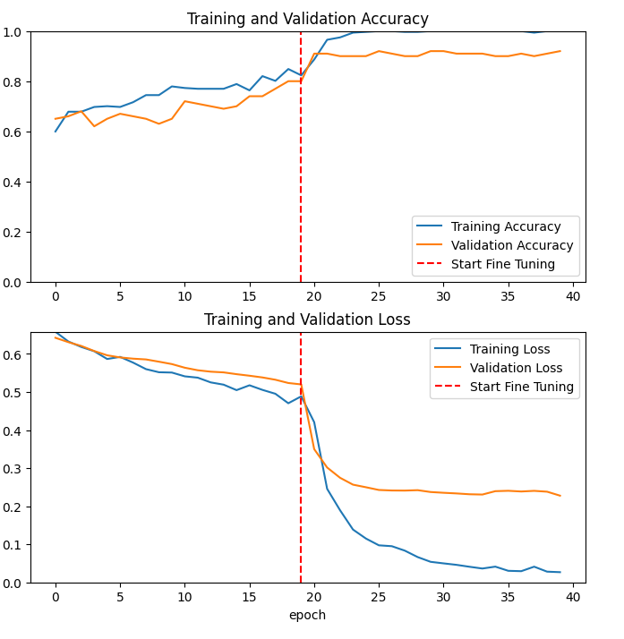
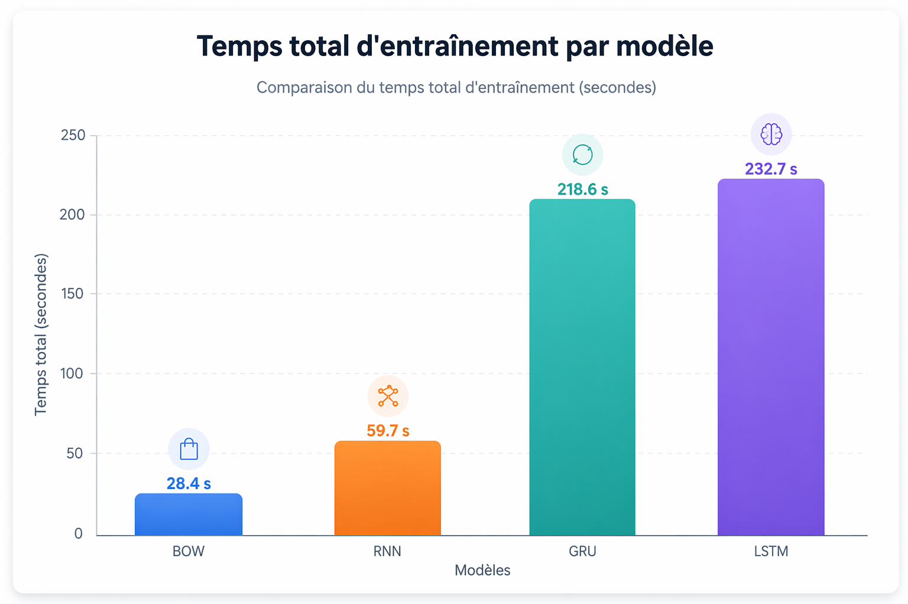
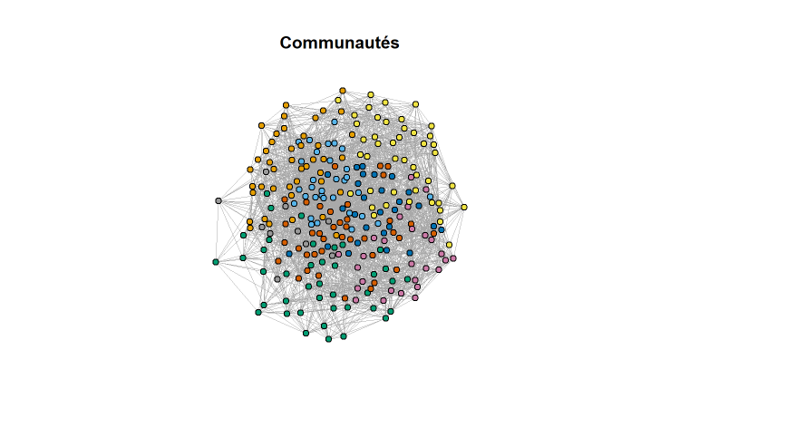
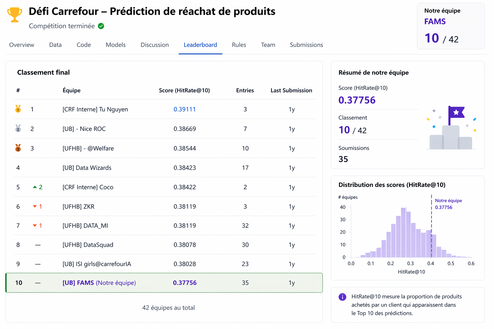

En recherche d'opportunités · Mobile toute la France
Data Scientist · ML Engineer · IA
Master en Mathématiques Appliquées, Université de Bordeaux. Curieuse des systèmes, des données et de ce qu'on peut en faire.

Ce qui m'attire dans la data science, c'est la rigueur qu'elle exige : comprendre avant de coder, défendre chaque choix technique, mesurer chaque résultat. Je ne considère un projet terminé que lorsqu'il est explicable autant que fonctionnel.
Mon stage chez Tiama / Kestrel Vision a été formateur à ce titre : construire un pipeline d'images synthétiques, l'optimiser, et le voir validé. Les résultats : PSNR +67%, FID −94%, MAE −98%.
Aujourd'hui je cherche un environnement où continuer à apprendre et contribuer pleinement. Mobile toute la France.
Démarche
Comprendre avant de coder. Défendre chaque choix. Mesurer chaque résultat.
Je construis des projets de bout en bout, du traitement des données à la mise en production, avec une attention constante à la validation rigoureuse des modèles (cross-validation, train/test split, K-Fold), à la reproductibilité et à l'explicabilité.
Habituée aux environnements Agile et aux revues de code, j'attache autant d'importance à la qualité du processus qu'aux métriques finales.
IA & Deep Learning
MLOps & Production
Computer Vision & NLP
Data & Visualisation
Tiama / Kestrel Vision · Division IA · Île-de-France
Ayor Water and Heating Solutions · Marsac

MLOps · RecSys · Projet personnel
Système de recommandation bout-en-bout sur 32M transactions. Trois modèles (ALS, BPR, EASE), tuning Optuna, tracking MLflow, API FastAPI, interface Streamlit, Docker Compose.
ALS meilleur modèle · Hit Rate @10 : 13.3% → 16.2% (+22%)
Code source →
Computer Vision · Transfer Learning · Projet académique
Comparaison CNN from scratch vs transfer learning sur images satellites. Analyse des performances et vitesses de convergence selon l'architecture.
CNN scratch 95.7% → ResNet50 fine-tuné 98%

NLP · Deep Learning · Projet académique
Comparaison de trois architectures récurrentes sur AG_NEWS (4 catégories). Analyse des performances, convergence et capacités de généralisation.
AG_NEWS · 4 catégories · Comparaison architectures

Stats · Graphes · Projet académique
Analyse des dépendances temporelles et conditionnelles sur 262 stations : corrélations brutes, Graphical LASSO, détection de communautés climatiques (Louvain), visualisation cartographique.
262 stations · Graphical LASSO · Communautés Louvain

RecSys · Compétition · Kaggle
Prédire les produits que des clients Carrefour vont racheter à partir de leur historique d'achats. Double approche : modèle heuristique pondéré (fréquence, récence, popularité) et réseau de neurones.
Top 10 / 42 équipes · Score 0.377 · Hit Rate @10
Ouverte aux opportunités en Data Science et ML Engineering. Mobile toute la France.